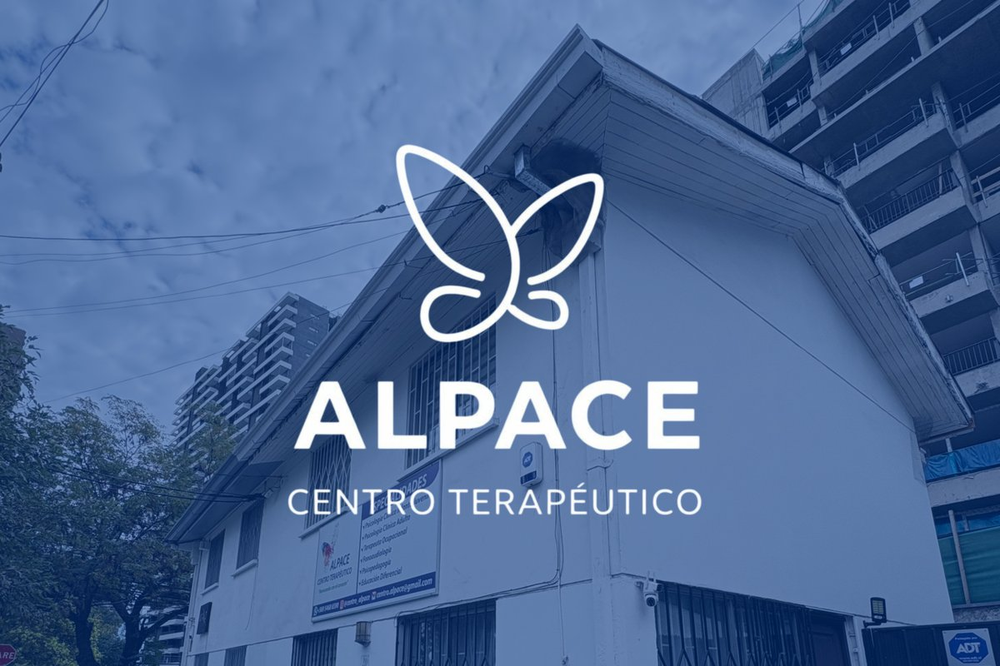
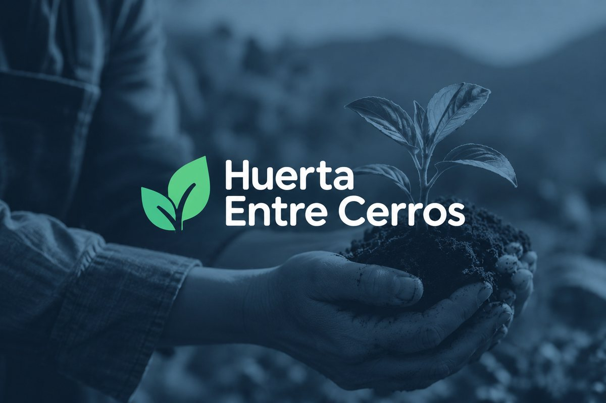

Centro Terapéutico Alpace
Identidad visual desde cero (logo, colores, línea gráfica en Canva) y gestión de contenido — la cuenta de Instagram creció en más de 100 seguidores nuevos.
Asegura la presencia digital de tu empresa o emprendimiento.

Identidad visual desde cero (logo, colores, línea gráfica en Canva) y gestión de contenido — la cuenta de Instagram creció en más de 100 seguidores nuevos.
Proyecto propio de inserción laboral para personas cuidadoras. Finalista en el Concurso Despega USACH 2025.

Sitio web desarrollado desde cero en HTML, CSS y JavaScript: diseño responsivo para celular y computador, SEO para aparecer en Google, buenas prácticas de seguridad y carga rápida.
Comunicación, sitios web y tiendas online para pymes y emprendedores de Puente Alto y la Región Metropolitana — con acompañamiento cercano, sin letra chica.
Tienes un negocio que funciona, pero tu presencia digital no lo demuestra: un Instagram sin orden, un sitio que nunca hiciste, o uno que no dice lo que realmente ofreces.
Pago por proyecto para entregables únicos (sitio, identidad visual, tienda online) — planes mensuales para lo recurrente (redes, mantención, contenido).
Definimos qué necesitas contar y a quién, antes de diseñar cualquier pieza: identidad visual, contenido para redes y newsletters — para que tu negocio se recuerde, no solo para "estar activo".
Un sitio o portafolio propio, escrito a mano, sin plantillas genéricas — para que quien te busque en Google encuentre información clara y actualizada.
Si ya vendes por WhatsApp, Instagram o tienda online, ordenamos ese canal — catálogo, fichas de producto, proceso de compra — para que quien llega termine comprando.
Cuéntame qué tienes hoy y qué te gustaría lograr. La primera conversación de diagnóstico no tiene costo.
Porque lo importante de un arrecife está bajo la superficie. Antes de proponer una solución, entendemos qué necesita realmente tu negocio.